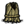

The Snurtle Shell Armor has 1050 durability and absorbs 60% of physical damage (or 100% while hiding inside), right click to go inside the shell. The Snurtle Shell Armor has a 75% chance to drop from Snurtles.

Armors are in-game Items that protect the character from harm. They work by absorbing a part of taken damage which then gets subtracted from their durability instead of character's health.
|
| The Grass Suit has 225 durability and absorbs 60% of physical damage. |
|
| The Log Suit has 450 durability and absorbs 80% of physical damage. |
|
| The Night Armour has 750 durability and absorbs 95% of physical damage. Wearing the Night Armour drains 10 sanity/minute and decreases Sanity by 10% of total damage taken (not only absorbed by the armor). |
|
| The Marble Suit has 1050 durability and absorbs 95% of physical damage. Wearing the Marble Suit slows the character movement speed by 30%. |
|
|
The Snurtle Shell Armor has 1050 durability and absorbs 60% of physical damage (or 100% while hiding inside), right click to go inside the shell. The Snurtle Shell Armor has a 75% chance to drop from Snurtles. |
|
| The Thulecite Suit has 1800 durability and absorbs 90% of physical damage. Wearing the Thulecite Suit also raises sanity by 3.3/min. |

| The Football Helmet has 450 durability and absorbs 80% of physical damage. |

|
The Beekeeper Hat has 750 durability and absorbs 80% of all damage taken from Bees and Killer Bees. |

| The Shelmet has 750 durability and absorbs 90% of physical damage. The Shelmet is dropped 10% of the time by Slurtles. |

| The Thulecite Crown has 1200 durability and absorbs 90% of physical damage. It also has a random chance to activate a forcefield which absorbs 100% of damage and prevents the player from getting stunned. 5% of the damage that would have been dealt is instead reduced from sanity. |
When the character is wearing both chest armour and head armour, the total received damage would be distributed as follows:
It is hard tell without getting hit first or using a mod which item is designated as primary or secondary armour. Re-equipping them or reloading the game can change this order. In any order the damage subtracted from the character's  is the same.
is the same.
Example: Attack damage of a Spider Queen (80) to a character equipped with a  (primary armor) and a (secondary armor) will be distributed as follows:
Calculation can be simplified to: 80 × (1 − 0.6) × (1 − 0.8) = 6.4
The game itself does not distinguish any sort of pre defined priorities of armor, instead takes them on the fly. Therefore, while it might be hard to keep track of what armor receives the most damage, it can be manageable.
Primary armor, i.e. the armor that absorbs the most damage, is always the last equipped. In order to save one's helmet, he would be to equip the helmet first, then the suit. If a suit is hot switched, i.e. replaced right away, it keeps its positions. However, if there is any moment in which the helmet slot is empty (occurs when a helmet breaks, even if the player has a replacement in his inventory), the helmet assumes the primary slot and the suit has to be taken off and equipped again.
It has been reported that reloading the game could change the positions. If not sure what armor is primary, just unequip your suit and equip it again, and the suit will become the primary.
Keep in mind that even the most beaten up log/grass suit still retains its original fuel value, therefore does not have to be used up. Instead of heading into the battle with an armor of a low durability, risking the helmet assuming primary slot mid-fight, try equipping the shiny new suit and leaving the old one for when the night comes. One can also use this to easily hot switch the armor mid-battle when the original one nears its end.